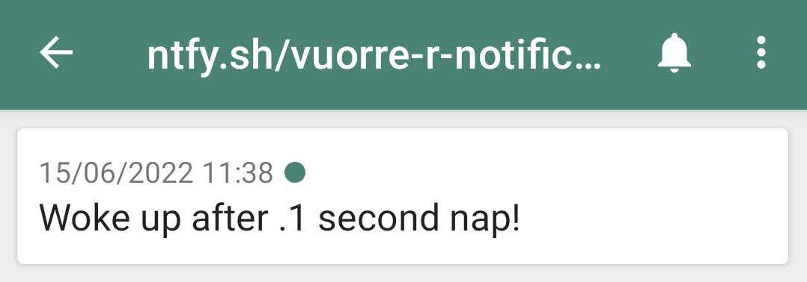

![]()
# Long running code here
Sys.sleep(.1) # Sleep for .1 second
# Send notification
system("curl -d 'Woke up after .1 second nap!' ntfy.sh/vuorre-r-notifications")R can be a pretty slow tool. So it would be good to know when an expensive computation has ended. One way to do that is to have R send a notification to your phone when it is done. Here, I’ll show how to do that easily with ntfy.
Download ntfy.sh
Go to your app store (iOS/Android) and download the ntfy app.
Subscribe to a topic
Open the app on your phone and subscribe to a topic. Just type in a name that’s both memorable and not likely to already be used by someone else. I use vuorre-r-notifications.

Send notifications
You can now include variations of system("curl -d 'Notification text' ntfy.sh/vuorre-r-notifications") in your R code. For example, to send a notification after a long running code
You’ll get this notification on your phone:

This is really useful when you have simulations (mcmc or otherwise üòâ) that take a long time, and you‚Äôd like to act as soon as they are done. Have fun!
Reuse
Citation
BibTeX citation:
@online{vuorre2022,
author = {Matti Vuorre},
title = {Easy Notifications from {R}},
date = {2022-06-15},
url = {https://vuorre.netlify.app/posts/easy-notifications-from-r},
langid = {en}
}
For attribution, please cite this work as:
Matti Vuorre. 2022. “Easy Notifications from R.” June 15,
2022. https://vuorre.netlify.app/posts/easy-notifications-from-r.